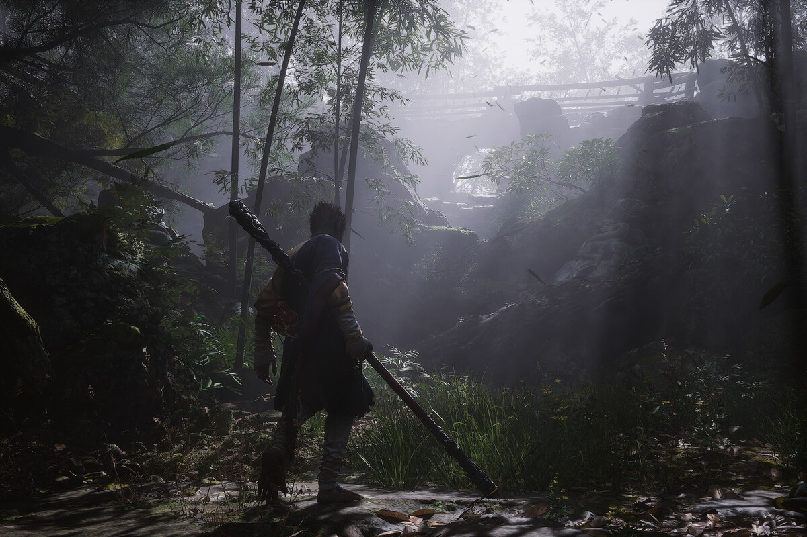
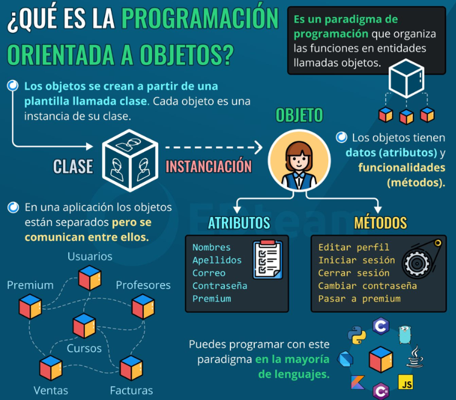

Análisis de Black Myth: Wukong
Fecha de publicación: 28 de Agosto de 2024

Con Black Myth: Wukong no hubo duda. Un día nos enseñaron un tráiler, y algo se activó en la mente colectiva de básicamente todos los jugadores que nos hizo decir, "a seguimiento que va".
Valores de producción altísimos, gráficos para quitar el hipo como los que la industria triple-A lleva diez años sin darnos; y el tipo de acción RPG que esperas de un candidato a GOTY. Pues bien, el juego ha llegado al fin y es el momento de rendir cuentas con lo que tal vez sea el lanzamiento más monstruoso del 2024.
Impacto de la programación orientada a objetos en el desarrollo de aplicaciones
Fecha de publicación: 27 de Agosto de 2024

Impacto de la programación orientada a objetos en el desarrollo de aplicaciones:
El impacto de la programación orientada a objetos en el desarrollo de aplicaciones ha sido inimaginable. Analicemos algunos puntos importantes que han hecho de la POO una elección popular entre los desarrolladores:
Mejora en la organización del código:
En la POO el código se estructura a través de objetos y clases, con lo cual se facilita la creación de aplicaciones organizadas y mantenibles en el tiempo. Esta organización genera un gran impacto de la programación orientada a objetos ya que permite a los equipos de desarrollo trabajar conjuntamente y al mismo tiempo en diferentes partes de una aplicación, lo que hace que haya una mayor productividad. Sumado a esto, la estructura de la POO puede facilitar la detección y corrección de errores, ya que el código se encuentra dividido en módulos independientes.
Reutilización de código: ahorro de tiempo y recursos
Un impacto de la programación orientada a objetos muy destacado es su capacidad para reutilizar el código por medio de la herencia y la creación de clases bases. Este proceso ahorra tiempo, dinero y al mismo tiempo asegura que las aplicaciones sean consistentes. Por ejemplo, una vez que un desarrollador ha creado una clase que maneja la autenticación de usuarios, esa misma clase puede ser reutilizada en otros proyectos sin necesidad de reescribir el código.
Escalabilidad y mantenimiento a largo plazo
El impacto de la programación orientada a objetos ha sido en gran parte a la modularidad que esta posee, ya que facilita la expansión y modificación de aplicaciones, mientras evolucionan las necesidades del negocio. Esta modularidad permite que se puedan añadir nuevas funcionalidades o actualizar las existentes sin que esto afecte el resto del sistema, proceso que también tiene que ver con la escalabilidad.
Película más esperada del año: Deadpool & Wolverine
Fecha de publicación: 26 de Agosto de 2024
Deadpool & Wolverine se logra mantener en la cima de la taquilla en EEUU
“Deadpool & Wolverine” se mantuvo al tope de la taquilla norteamericana en su quinto fin de semana, al recaudar 18,3 millones, con lo que su total asciende a más de 1.200 millones.
Se mantenían arriba las películas ya estrenadas, pero no les fue bien a los nuevos estrenos.
The Walt Disney Co., propietaria de 20th Century Studios, retuvo los dos primeros peldaños por segunda semana seguida con “Alien: Romulus” de segunda.
Lo que es Deadpool & Wolverine es como un festín, gracioso y muy violento, por momentos grosero o guarango, también una parodia a las películas anteriores de Deadpool, y en las que apareció Wolverine, o sea, también a los X-Men. No es cuestión de casualidad: Fox, también, estaba detrás de toda la saga de los mutantes.
Escenas de acción sangrientas entre Ryan Reynolds y Hugh Jackman
Abundan las escenas de acción sangrientas, entre ellos (tienen poderes mágicos de curación, así que por más que los ensarten con una katana o las garras, se recuperan) y con los malvados o agentes de seguridad de la TVA (Autoridad de Variación Temporal), pero el plato fuerte está en el humor, a veces soez, otras, ingenuo.
Caja de Comentarios